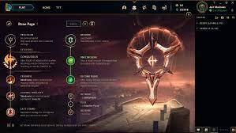
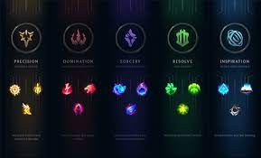

Lol runes

Runes are enhancements that add new abilities or buffs to the champion.
The player can choose their loadout of runes before the match begins, during champion select or their Collection tab.
Runes Reforged (the current system of runes) was introduced in Pre-Season Eight, supplanting the previous system of Runes and Masteries, hence the name Reforged
Rune Pages

A player can have a maximum of 25 custom rune pages, which are separate from the recommended rune page which cannot be edited and only exists per-game.
Players in levels 1 to 9 cannot create nor edit rune pages.
Rune paths

Runes are divided into five paths:
- Precision
- Domination
- Sorcery
- Resolve
- Inspiration
Each rune page contains runes from two paths: one primary and one secondary.
The primary path has one keystone and three lesser runes.
The secondary path has two lesser runes.
There are also three Shard slots alongside the Primary and Secondary paths that follow a path separate from the five.
Each individual slot can be filled with one selection.
.jpg)
.jpg)